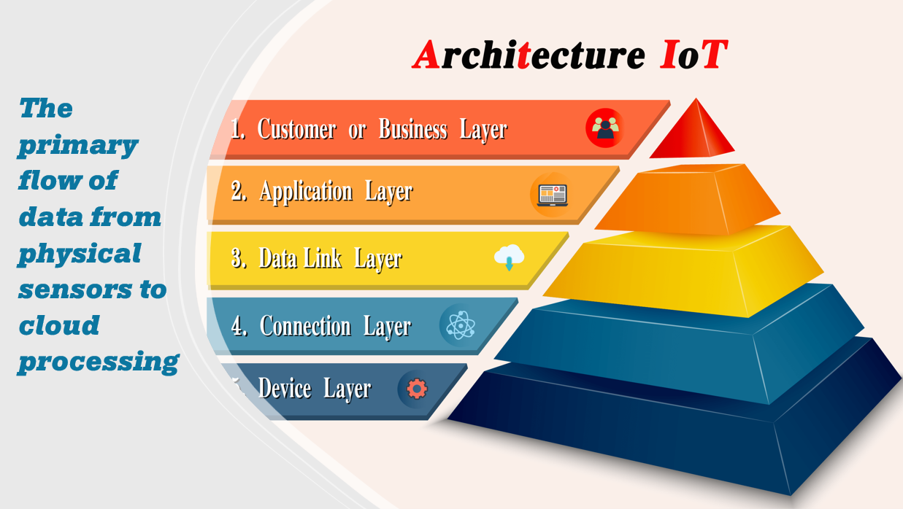
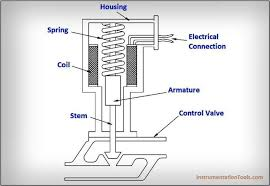
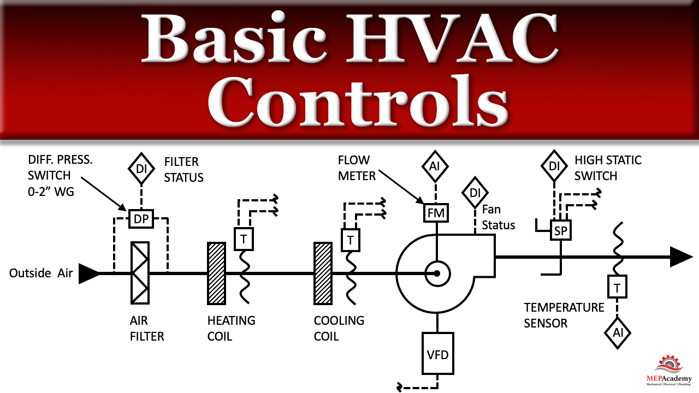

IOT refers to a system of interconnected physical devices that collect and exchange data over internet without any human intervention. Devices connected throughout the internet are inherently dependent upon hardware to function and execute logic in the physical world.
To build a functional IoT architecture, four distinct components must operate seamlessly together:

In simple words, a sensor detects things and an actuator actually does the mechanical work.
Sensor: An electronic device that detects, measures or responds to physical, chemical or environmental changes (temperature, light, pressure, motion) and converts these changes into measurable electric signals interpreted by machines.
Actuator: Converts digital signals back into mechanical signals. It enables automated control of a system (Eg: Moving a motor, opening/closing valves).

The Microcontroller controls the entire IOT Mechanism. It is a compact integrated circuit designed to perform specific tasks in embedded systems.
Physical Quantity → Sensor → Electrical signal → Microcontroller → Output.

Temperature is sensed → data is transmitted →
processed → decision is made → actuator operates automatically.
Ans: A microcontroller is a compact integrated circuit designed to perform a specific task in an embedded system. It acts as the brain of an IoT system, controlling the entire mechanism. It contains a processor (CPU), memory unit (RAM and ROM), and input-output peripherals all on a single chip. The CPU executes instructions and performs logical operations, while the I/O ports are used to connect external devices such as input sensors and actuators.
Ans: An IoT architecture relies on four main components: 1. Sensors (to detect physical parameters), 2. Connectivity (to transmit data via Wi-Fi/Bluetooth), 3. Data Processing (microcontrollers and cloud systems to compute decisions based on input), and 4. User Interface (a dashboard allowing users to monitor systems and input manual overrides).
Ans: A sensor detects and measures physical, chemical, or environmental changes (e.g., temperature, light, pressure) and converts them into electrical signals that machines can interpret. An actuator does the reverse; it converts digital or electrical signals into physical, mechanical action to enable automated control. For example, a temperature sensor detects heat in a room, while an electrical actuator like an AC motor actually turns on the fan to cool it down.
Ans: The working principle of a sensor involves four key stages: 1) Sensing Element: This component detects the actual physical parameters like heat or humidity. 2) Transduction: The process that converts the detected physical quantity into electrical signals. 3) Signal Processing: This step amplifies or modifies the raw electrical signal so it is clean and readable. 4) Final Output: The processed signal is finally sent to the microcontroller for decision-making.
Ans: A Smart Agriculture System leverages the Internet of Things (IoT) to create a network of interconnected physical devices that collect and exchange field data over the internet without human intervention. This enables precise, automated farming to maximize yield and minimize resource wastage.
I. System Architecture & Components
II. Complete Workflow (Automatic Irrigation Example)